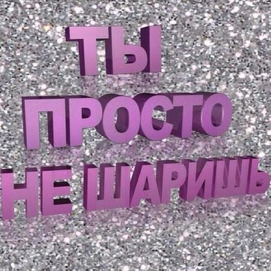

|
 ГЛАВА 2: ПОДШАРЫ МОИ ПОДШАРЫне очень люблю слово ФАНДОМ и не причисляю себя ни к одному из таких. в жизни комьюнити каких либо произведений я не особо участвую, а к писателям слово фандом в большинстве своем вообще не применяется. проще сказать что я именно за что то ШАРЮ. а шарю я за: игры: nuclear throne, minecraft, the binding of isaac, post void, postal (redux/2/brain damaged), peglin, needy streamer overload, balatro, brotato, oneshot (но надо допройти), undertale, katana zero, geometry dash (забросил) и во всякие мобилки поигрываю иногда мультяшки/аниме/все такое: k-on!, bocchi the rock!, lucky star, chiikawa, не моя вина что я непопулярна, spy family, южный парк, дарья любимые книжки: Кирилл Рябов — "777", Владимир Сорокин — "норма", "метель", "пир", Михаил Лермонтов — "мцыри", Виктор Пелевин — "числа", Вячеслав Машнов и Андрей Замай — "логика антихайпа" пред. глава/след. глава |